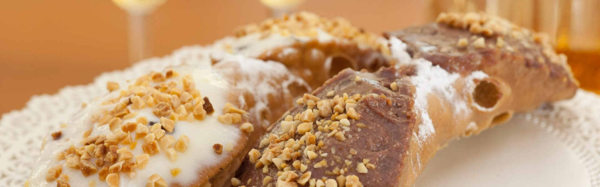
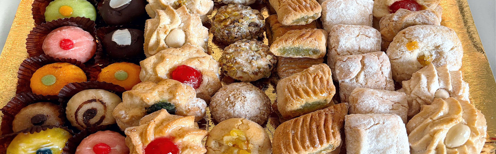
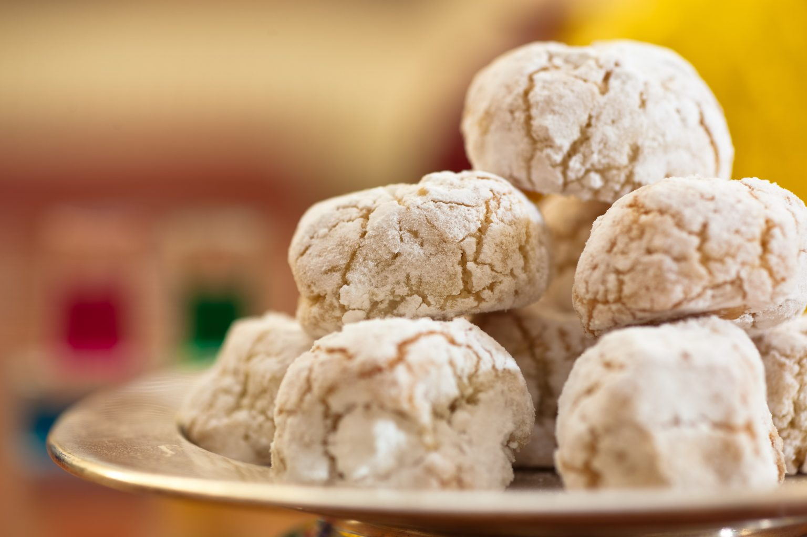
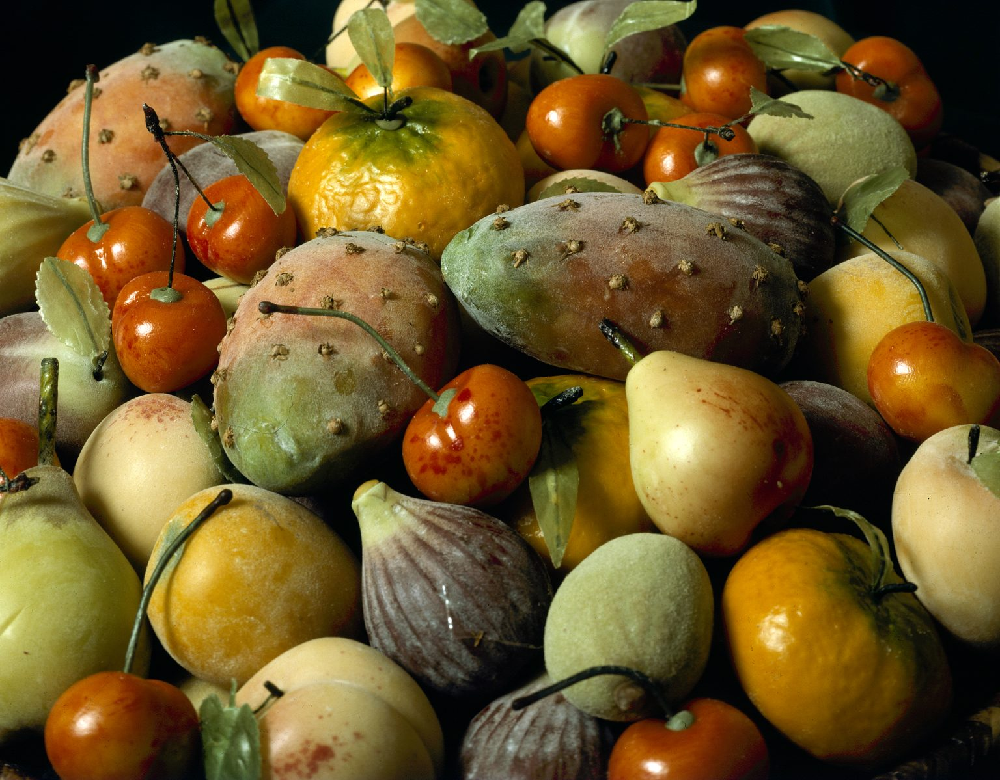
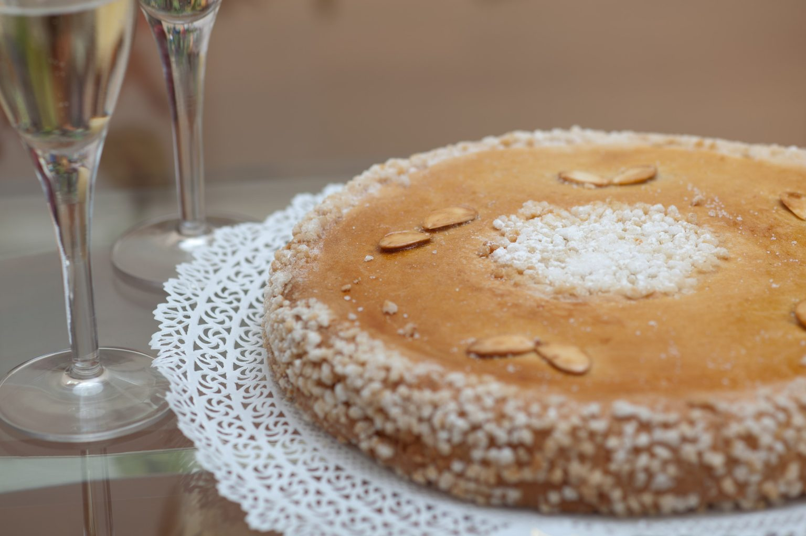

Alta pasticceria siciliana
Benvenuti a Casa Irrera.

Le nostre specialità
Pignolata, cannoli, cassata.
01 · i classici

Le mandorle secondo noi
Paste, fior di mandorlo, marzapane.
02 · pasta reale

I dolci delle feste
Frutta martorana, a stagione.
03 · le ricorrenze

La specialità della casa
Torta Letizia: un dolce unico ed esclusivo della nostra tradizione.
04 · dal 1910
Le radici dell’eccellenza
Dal 1910, a Messina.
Casa Irrera eredita l’antica esperienza della pasticceria Irrera, nata a Messina nel 1910. L’unica sede di produzione è in via Maregrosso 36; il punto vendita è in via Santa Cecilia.
Consegna gratuita sopra gli 80€ · a Messina con Glovo e Just Eat
Ordina i tuoi dolci preferiti, dove vuoi…
090 712148Via Santa Cecilia, Messina · chiuso il lunedì
Casa Irrera · anteprima di restyling non ufficiale, foto e contenuti dal sito dell’attività · albemiglio.it